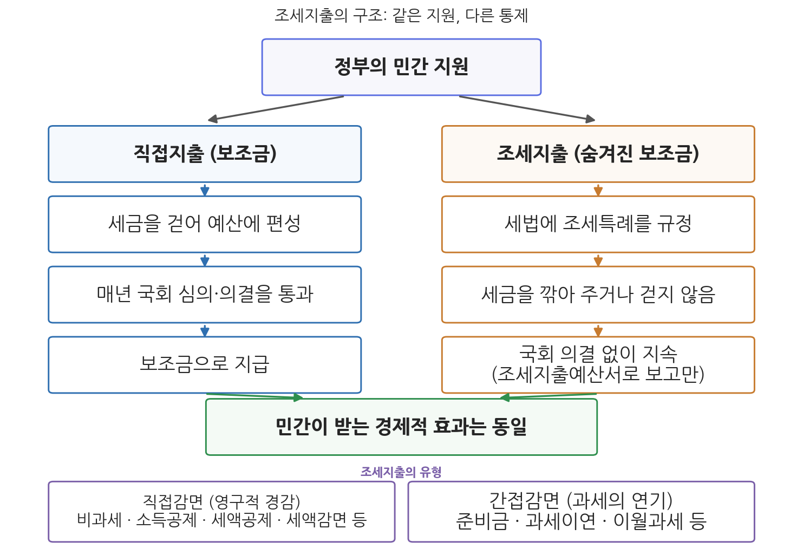
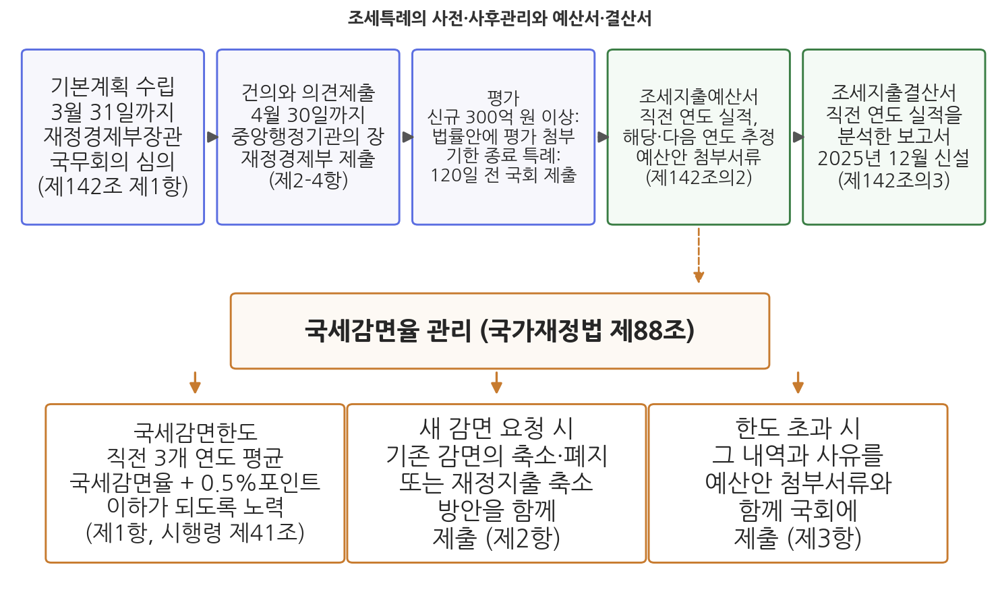
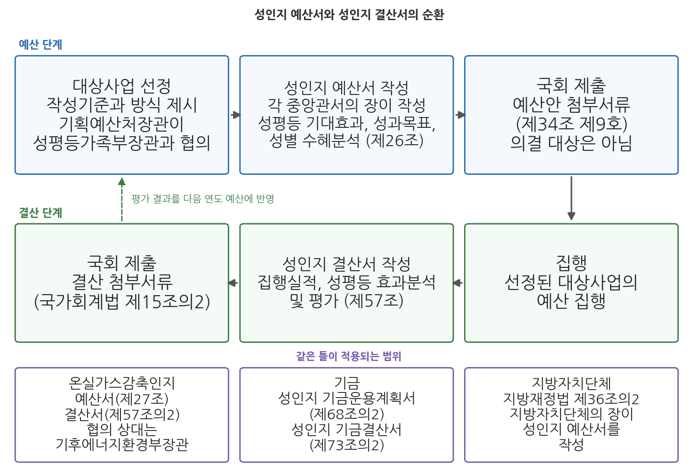
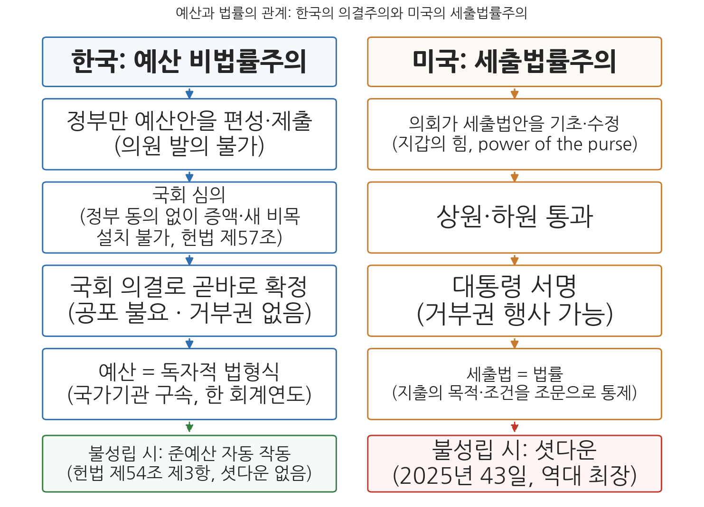

6주차 2차시. 조세지출·성인지 예산과 예산법률주의
최종 수정: 2026-10-01 · 이 교재는 학기 중에도 계속 업데이트됩니다
조세감면·비과세·소득공제·세액공제·우대세율적용 또는 과세이연 등 조세특례에 따른 재정지원 (조세특례제한법 제142조의2의 조세지출 정의)
이 장에서 배우는 것
2026년의 나라 살림을 이야기할 때 대부분의 사람은 총지출 727.9조 원이라는 숫자를 떠올린다. 그런데 예산서에 지출로 잡히지 않는 또 하나의 거대한 지원이 있다. 2026년 국세감면액은 80.5조 원으로 사상 처음 80조 원을 넘어 역대 최대를 기록할 전망이다(2025년 76.5조 원). 정부가 걷을 수 있었던 세금을 깎아 주거나 걷지 않는 방식으로 기업과 가계를 지원한 금액이다. 만약 이 돈을 일단 다 걷은 뒤 보조금으로 나눠 주었다면 매년 국회의 예산 심의를 받았을 것이다. 그러나 세금을 "깎아 주는" 방식을 취하는 순간 이 지원은 예산서 바깥으로 사라진다. 이렇게 숨어 있는 지출을 예산처럼 드러내 관리하자는 것이 이 장의 첫 주제인 조세지출예산제도다.
1차시에서 우리는 예산이 성립 시기에 따라 어떤 종류로 나뉘는지 보았다. 이번 차시는 예산의 종류라는 틀을 두 방향으로 확장한다. 하나는 방금 본 것처럼 예산서 바깥의 지원(조세지출)을 예산의 시야로 끌어들이고 그 규모와 수혜자, 도입과 폐지의 절차까지 관리하는 제도이고, 다른 하나는 예산이 특정 가치에 미치는 영향을 분석해 예산서와 결산서에 붙이는 제도, 곧 성인지 예·결산서와 온실가스감축인지 예·결산서다. 그리고 마지막으로 이 모든 논의의 바탕에 있는 근본 질문을 다룬다. 예산은 법인가. 한국의 예산은 법률이 아니라 국회의 의결로 확정되는 독자적인 형식인데, 이를 법률로 바꾸자는 예산법률주의 논쟁이 개헌 논의 때마다 되풀이되고 있다. 구체적으로 다음을 배운다.
- 조세지출의 개념과 유형, 그리고 "숨겨진 보조금"이라 불리는 이유
- 조세지출예산서와 조세지출결산서의 구조, 국세감면율과 법정한도, 수혜자별 분석
- 조세특례의 사전·사후관리 절차와 국세감면 제한 규정
- 성인지 예산제도의 논리, 예산서에서 결산서로 이어지는 순환, 운영 실제
- 온실가스감축인지 예산제도의 논리와 세 문서(조세지출·성인지·온실가스감축인지)를 읽는 법
- 예산의 법적 성격에 관한 학설(승인설, 법률설, 법형식설)과 예산과 법률의 차이
- 예산법률주의 도입 논쟁의 찬반 논거와 미국 세출법 제도와의 비교
이 장은 하나의 질문을 따라 전개된다. "예산서에 다 담기지 않는 재정활동을 어떻게 드러내고, 예산이라는 형식 자체를 어떻게 규율할 것인가?"
2.1 조세지출의 개념과 조세지출예산서를 뜯어본다 → 2.2 조세지출의 규모와 관리(국세감면율, 수혜자, 사전·사후관리)를 본다 → 2.3 성인지 예산제도를 예산서에서 결산서까지 따라간다 → 2.4 온실가스감축인지 예산제도와 세 문서 읽는 법을 다룬다 → 2.5 예산의 법적 성격과 예산·법률의 차이를 정리한다 → 2.6 예산법률주의 논쟁의 쟁점과 사례를 살핀다 → 2.7 쟁점을 정리하고 3부 재정정책론(7주차)을 예고한다.
2.1 조세지출의 개념과 조세지출예산서
조세지출: 세금을 깎아 주는 것도 지출이다
조세지출(tax expenditure)은 조세 감면, 비과세, 소득공제, 세액공제, 우대세율 적용, 과세이연 등 조세특례에 따른 재정지원을 말한다. 언뜻 모순된 조어다. 세금을 깎아 주는 일이 어떻게 "지출"인가. 핵심 논리는 등가성이다. 정부가 어떤 기업의 세금 100억 원을 감면해 주는 것과, 세금을 다 걷은 뒤 그 기업에 보조금 100억 원을 지급하는 것은 정부와 기업의 주머니 사정에 미치는 효과가 같다. 세제상의 특혜는 그만큼의 보조금을 준 것과 동일하다는 의미에서 조세지출을 숨겨진 보조금(hidden subsidies)이라 부르기도 한다. 이 개념을 정식화한 사람은 1960년대 미국 재무부에서 세제 정책을 맡았던 서리(Stanley Surrey)로, 그는 세법 속에 흩어져 있는 특례 조항들이 사실상 지출 프로그램과 같은 기능을 하는데도 예산 통제를 받지 않는다는 점을 문제 삼았고, 이 논지를 『Pathways to Tax Reform』(Surrey, 1973)에 체계적으로 담았다. 미국은 1974년 의회예산및지출보류통제법(Congressional Budget and Impoundment Control Act)으로 조세지출이라는 개념을 의회의 예산과정에 공식적으로 들여왔고, 한국의 조세지출예산제도도 같은 문제의식에서 출발한다.
조세지출의 목적은 직접지출의 목적과 다르지 않다. 첨단기술 투자처럼 특정 활동을 지원하거나, 소상공인·농어민처럼 특정 집단을 지원하거나, 기초공제·배우자공제처럼 일반 납세자의 부담을 덜어 주기 위한 것이다. 구체적인 조세지출의 내용은 조세특례제한법을 중심으로 소득세법, 법인세법 등 개별 세법에 규정되어 있다. 조세특례제한법 제3조 제1항은 이 법, 국세기본법, 조약과 소득세법·법인세법 등 열거된 법률에 따르지 아니하고는 조세특례를 정할 수 없다고 규정해, 세제상의 특혜가 아무 법령으로나 만들어지지 못하도록 입구를 좁혀 두었다. 유형으로는 세금 부담을 영구히 덜어 주는 직접감면과 과세 시점을 뒤로 미루는 간접감면으로 나뉜다. 직접감면에는 비과세, 소득공제, 세액공제, 세액감면, 근로장려금·자녀장려금이나 부가가치세 영세율·면제 같은 기타감면이 있고, 간접감면에는 준비금, 과세이연, 이월과세 등이 있다.

그림 6-5을 읽는 법은 이렇다. 위쪽은 정부가 민간을 지원하는 두 경로를 나란히 놓은 것이다. 왼쪽 경로(직접지출)는 세금을 걷어 예산에 담아 보조금으로 지급하며 매년 국회 심의를 통과해야 한다. 오른쪽 경로(조세지출)는 걷을 세금을 애초에 깎아 주며, 세법에 한 번 규정되면 폐지될 때까지 자동으로 계속된다. 아래쪽은 조세지출의 유형 분류(직접감면과 간접감면)다. 이 그림에서 알 수 있는 것은 두 경로의 경제적 효과는 같은데 통제의 강도가 전혀 다르다는 점이다. 같은 100억 원의 지원이 왼쪽 길로 가면 해마다 심판대에 오르고, 오른쪽 길로 가면 예산서 바깥에서 조용히 계속된다. 조세지출예산제도는 바로 이 비대칭을 줄이려는 시도다.
같은 100만 원 공제, 다른 혜택: 소득공제와 세액공제
조세지출의 유형 구분은 단순한 분류가 아니라 누구에게 얼마를 지원하는가를 바꾸는 설계의 문제다. 소득공제는 과세표준에서 일정 금액을 빼 주는 방식이고, 세액공제는 계산된 세액에서 일정 금액 또는 비율만큼을 빼 주는 방식이다. 두 방식의 차이를 교육비 100만 원을 쓴 두 납세자의 (예시) 계산으로 확인해 보자. 한 사람의 한계세율이 6%이고 다른 사람의 한계세율이 35%라고 하자. 교육비 100만 원을 소득공제로 인정하면 과세표준이 100만 원 줄어드므로 앞사람은 6만 원, 뒷사람은 35만 원의 세금이 줄어든다. 반면 같은 지출에 15%의 세액공제율을 적용하면 두 사람 모두 세금이 15만 원 줄어든다. 소득공제는 한계세율이 높은 고소득자에게 더 큰 혜택이 돌아가고, 세액공제는 소득 수준과 무관하게 같은 지출에 같은 혜택을 주는 방식이다. 같은 "공제"라는 이름을 달고 있어도 분배에 미치는 효과가 정반대 방향으로 갈릴 수 있으므로, 조세지출을 평가할 때는 금액의 크기와 함께 공제의 방식을 반드시 확인해야 한다.
조세지출예산서: 숨은 지출을 장부에 올리다
조세지출예산제도는 조세지출로 인한 세수 감소액을 종합·분류해 체계적으로 보여 주는 제도다. 보조금 형태의 직접지출이 매년 국회 심의를 거치듯 조세지출도 국회의 심의를 받아야 한다는 인식에서 탄생했다. 한국은 국가재정법 제34조 제10호에 따라 2011회계연도 예산안부터 조세지출예산서를 예산안의 첨부서류로 작성·제출하고 있으며, 2013년 1월 1일 조세특례제한법에 제142조의2가 신설되어 작성의 직접적인 근거가 세법에도 마련되었다.
"① 재정경제부장관은 조세감면·비과세·소득공제·세액공제·우대세율적용 또는 과세이연 등 조세특례에 따른 재정지원(이하 "조세지출"이라 한다)의 직전 연도 실적과 해당 연도 및 다음 연도의 추정금액을 기능별·세목별로 분석한 보고서(이하 "조세지출예산서"라 한다)를 작성하여야 한다."
무슨 뜻인가. 세 가지를 읽어낼 수 있다. 첫째, 조세지출의 법적 정의가 이 조문에 있다. 감면·비과세·공제·우대세율·과세이연이라는 다양한 세제상 특혜를 "재정지원"이라는 하나의 개념으로 묶은 것 자체가 조세지출 사고방식의 제도화다. 둘째, 분석의 시간 범위가 직전·해당·다음의 3개 연도다. 실적과 추정을 함께 담아 조세지출의 흐름을 보여 준다. 셋째, 이 서류의 작성은 세제를 관장하는 재정당국의 소관이다. 2026년 정부조직 개편 이후 세제 사무는 재정경제부(세제실)가 관장하므로 조세지출예산서는 재정경제부장관이 작성한다. 예산안을 편성하는 기획예산처가 아니라는 점에 유의하자. 조세지출예산서는 국가재정법 제34조 제10호에 따라 예산안의 첨부서류로 국회에 제출된다. 다만 첨부서류일 뿐 국회의 심의·의결 대상은 아니다. 국회가 조세지출예산서의 숫자를 고쳐 확정하는 것이 아니라, 예산 심의와 세법 개정 심의의 참고자료로 활용하고 비과세·감면제도의 정비를 촉구하는 근거로 쓰는 것이다.
예산서는 미래의 추정을 담은 문서이므로 그 추정이 얼마나 맞았는지를 사후에 확인하는 장치가 있어야 완결된다. 2025년 12월 23일 신설된 조세특례제한법 제142조의3은 재정경제부장관이 조세지출의 직전 연도 실적을 분석한 보고서, 곧 조세지출결산서를 작성하도록 했고, 구체적인 작성방법과 제출시기는 대통령령으로 정하도록 위임했다. 세출 쪽에서 예산과 결산이 짝을 이루듯, 조세지출에서도 예산서와 결산서라는 짝이 법률상 갖추어진 것이다.
조세지출예산서의 이웃 문서도 하나 알아 두자. 국가재정법 제34조 제14호는 예산안 첨부서류로 국유재산특례제한법 제10조 제1항에 따른 국유재산특례지출예산서를 들고 있다. 이 문서는 재정경제부장관이 사용료 감면, 양여 등 국유재산특례에 따른 재정 지원의 직전 회계연도 실적과 해당·다음 회계연도 추정금액을 유형별로 분석해 작성한다. 세금이 아니라 국유재산의 사용료를 깎아 주는 방식의 지원도 같은 논리, 곧 "깎아 주는 것도 지출"이라는 논리로 예산의 시야에 들어온 것이다.
2.2 조세지출의 규모와 관리
국세감면율과 법정한도: 총량을 재는 자
조세지출이 얼마나 큰지를 재는 대표 지표는 국세감면액과 국세감면율이다. 국세감면율은 국세 수입총액과 국세감면액을 합한 금액에서 국세감면액이 차지하는 비율로, 세금을 하나도 깎아 주지 않았다면 걷혔을 전체 세수 가운데 얼마를 깎아 주었는가를 보여 준다. 2025년의 전망치로 계산해 보면, 세입예산 기준 국세 수입이 412.2조 원이고 국세감면액이 78.0조 원이므로 국세감면율은 78.0 ÷ (412.2 + 78.0) = 15.9%가 된다. 감면액만 보면 커지는 것이 당연해 보이지만 세수 자체도 함께 늘기 때문에, 조세지출의 부담을 판단할 때는 감면액의 절대 규모와 감면율을 함께 보아야 한다.
표 6-4. 국세감면액·국세감면율·법정한도 추이
| 연도 | 구분 | 국세감면액(조 원) | 국세감면율(%) | 법정한도(%) | 한도 준수 |
|---|---|---|---|---|---|
| 2023 | 실적 | 69.8 | 15.8 | 14.3 | 초과 |
| 2024 | 전망 | 71.4 | 15.3 | 14.6 | 초과 |
| 2025 | 전망 | 78.0 | 15.9 | 15.2 | 초과 |
| 2026 | 전망 | 80.5 | 16.1 | 16.5 | 준수 |
표 6-4의 2023-2025년 수치는 2025년도 조세지출예산서(2024년 8월 기획재정부 보도자료 기준, 2025년은 세입예산 기준)에 따른 것이고, 2026년 수치는 2026년도 조세지출예산서의 전망이다. 같은 해라도 예산서가 새로 작성될 때 추정이 갱신되므로, 2025년의 감면액은 2026년도 조세지출예산서에서 76.5조 원으로 수정되었다. 국회예산정책처는 2026년 감면액을 이보다 높은 81.5조 원(감면율 16.0%)으로 전망했다. (출처: 기획재정부 보도자료 2024-08-27, 세계일보 2026-03-31, 국회예산정책처 '2026년도 조세지출예산서 분석' 2025년 10월)
이 총량을 묶어 두는 장치가 국가재정법 제88조의 국세감면한도다.
"① 재정경제부장관은 대통령령으로 정하는 해당 연도 국세 수입총액과 국세감면액 총액을 합한 금액에서 국세감면액 총액이 차지하는 비율(이하 "국세감면율"이라 한다)이 대통령령으로 정하는 비율(이하 "국세감면한도"라 한다) 이하가 되도록 노력하여야 한다.
② 각 중앙관서의 장은 새로운 국세감면을 요청하는 때에는 대통령령으로 정하는 바에 따라 감면액을 보충하기 위한 기존 국세감면의 축소 또는 폐지방안이나 재정지출의 축소방안과 그 밖의 필요한 사항을 작성하여 재정경제부장관에게 제출하여야 한다.
③ 재정경제부장관은 국세감면율이 국세감면한도를 초과하는 경우 그 내역 및 사유를 제34조 각 호에 규정된 첨부서류와 함께 국회에 제출하여야 한다."
무슨 뜻인가. 이 조문은 총량 관리와 신규 감면의 관리, 초과 시의 투명성을 세 겹으로 쌓았다. 제1항의 한도는 국가재정법 시행령 제41조 제3항이 구체화한다. 해당 연도의 직전 3년간 국세감면율을 평균한 값에 0.5%포인트를 더한 비율이다(이 경우 1천분의 1 미만은 버린다). 또한 시행령 제41조 제2항은 국세감면액 총액을 조세지출예산서의 국세감면액으로 정의한다. 2026년의 한도 16.5%는 이 공식에 따라 직전 3개 연도의 평균 감면율이 16.0% 안팎이라는 뜻이다. 한도가 직전 연도들의 실적에 연동되므로 감면이 계속 늘면 한도도 함께 올라가는 구조라는 점에 주의하자. 제2항은 재정지출의 "페이고(pay-as-you-go)"와 같은 논리를 세제에 적용한 것으로 읽을 수 있다. 새 감면을 만들려면 그만큼 다른 감면을 줄이거나 지출을 줄이는 방안을 함께 내라는 것이다. 제3항은 한도를 넘겼을 때 그 내역과 사유를 국회에 제출하도록 해 제재 대신 공개로 책임을 묻는다. 제1항이 "노력하여야 한다"는 노력 의무이기 때문에 한도를 넘겨도 법적 제재는 없고, 표 6-4에서 보듯 2023-2025년의 세 해 연속 한도 초과가 그 한계를 보여 준다. 2026년은 2022년 이후 4년 만에 한도를 지킬 전망이지만, 한도 자체가 높아진 영향도 함께 고려해야 한다.
2025년도 조세지출예산서를 국회에 제출하면서 기획재정부는 연도별 감면액 증가의 요인을 다음과 같이 설명했다. 2023년 국세감면액은 69.8조 원으로 2022년보다 6.2조 원 늘었는데, 연구개발(R&D) 세액공제 증가와 신용카드 사용금액 소득공제 확대 등이 요인이었다. 2024년은 사회보험료 등 공제 증가와 근로·자녀장려금 지급액 인상 등으로 2023년보다 1.6조 원 늘어난 71.4조 원이 전망되었고, 2025년은 기업 실적 회복에 따른 통합투자세액공제 증가 등으로 2024년보다 6.6조 원 늘어난 78.0조 원이 전망되었다. (출처: 기획재정부 보도자료, 2024-08-27)
이 사례가 보여 주는 것은 조세지출이 법을 새로 만들지 않아도 늘어난다는 점이다. 신용카드 사용이 늘면 소득공제액이 늘고, 기업 실적이 좋아지면 세액공제액이 늘며, 장려금 지급 단가를 올리면 기타감면이 늘어난다. 앞의 두 요인은 법령 개정 없이 경기와 납세자의 행태가 만든 증가이고 세 번째는 제도 변경이 만든 증가다. 직접지출은 예산 편성 단계에서 상한을 정할 수 있지만 조세지출은 요건만 충족하면 누구나 받을 수 있는 권리 성격의 지원이어서 결과로서만 금액이 드러난다. 그래서 조세지출은 총량을 사전에 묶기가 어렵고 예산서·결산서로 사후에 확인하는 방식에 기댈 수밖에 없다.
누가 혜택을 받는가: 수혜자별 분석
조세지출예산서는 감면액을 세목별·기능별뿐 아니라 수혜자별로도 분석한다. 표 6-5는 개인과 기업으로 나누어 감면액의 분포를 보여 준다.
표 6-5. 조세지출의 수혜자별 감면 현황
| 구분 | 2023년 실적 | 2025년 전망 |
|---|---|---|
| 개인 (총계 대비 비중) | 43.1조 원 (61.7%) | 49.9조 원 (64.0%) |
| 개인 중 중·저소득자 비중 | 67.7% | 66.6% |
| 개인 중 고소득자 비중 | 32.3% | 33.4% |
| 기업 (총계 대비 비중) | 26.2조 원 (37.6%) | 27.6조 원 (35.4%) |
| 기업 중 중소기업 비중 | 68.8% | 68.5% |
| 기업 중 중견기업 비중 | 3.9% | 3.6% |
| 기업 중 대기업 비중 | 16.7% | 17.9% |
| 기업 중 기타 비중 | 10.6% | 10.0% |
| 총계 (구분곤란 0.5조 원 포함) | 69.8조 원 | 78.0조 원 |
표 6-5에서 중·저소득자는 근로소득 8,400만 원(전체 근로자 평균임금의 200%) 이하 근로자, 농어민, 고령자, 장애인 등을 말하고, 대기업은 상호출자제한기업집단 소속 기업을 가리킨다. 2025년도 조세지출예산서 기준의 수치이며 2025년은 전망이다. (출처: 기획재정부 보도자료, 2024-08-27)
표 6-5를 읽으면 두 가지가 보인다. 첫째, 감면액의 60%대가 개인에게 돌아가고 그 가운데서도 중·저소득자의 몫이 3분의 2 안팎이므로, 조세지출을 "부자와 대기업을 위한 혜택"으로만 이해하는 것은 표의 수치와 맞지 않는다. 둘째, 개인 감면액의 3분의 1은 고소득자에게 돌아가고 기업 감면의 6분의 1 안팎은 대기업으로 향한다. 앞 절의 소득공제 예시에서 본 것처럼 제도의 설계 방식에 따라 고소득자의 몫이 커질 수 있다는 점에서, 수혜자별 분석은 조세지출의 분배 효과를 점검하는 출발점이 된다. 다만 이 표는 감면액의 귀착을 분류한 것이지 각 제도의 실제 경제적 효과를 측정한 것은 아니라는 점을 기억해야 한다.
조세특례의 사전·사후관리: 들어오는 문과 나가는 문
조세지출을 관리하는 또 하나의 축은 새 조세특례가 만들어지는 과정과 이미 있는 조세특례가 점검되는 과정을 법으로 묶어 두는 것이다. 이 절차가 조세특례제한법 제142조(조세특례의 사전·사후관리)에 있다.
"① 재정경제부장관은 매년 3월 31일까지 조세특례 및 그 제한에 관한 기본계획을 수립하여 국무회의의 심의를 거쳐 중앙행정기관의 장에게 통보하여야 한다.
② 중앙행정기관의 장은 경제ㆍ사회정책 등의 효율적 수행을 위하여 조세감면이 필요하다고 인정되는 사항에 대하여 조세감면의 목적, 조세감면으로 인하여 기대되는 정책효과, 연도별 예상 세수효과 및 관련 통계자료 등을 포함한 조세감면에 관한 건의를 매년 4월 30일까지 재정경제부장관에게 하여야 한다.
...
⑥ 정부는 연간 조세특례금액이 300억원 이상인 조세특례를 신규로 도입하는 법률안을 제출하는 경우에는 전문적인 조사ㆍ연구기관에서 조세특례의 필요성 및 적시성, 기대효과, 예상되는 문제점 등 대통령령으로 정하는 내용에 대해 평가한 결과를 첨부하여야 한다. 다만, ..."
무슨 뜻인가. 제1항과 제2항은 조세감면의 연간 일정을 법률에 박아 두었다. 재정경제부장관이 3월 31일까지 기본계획을 세우면 각 중앙행정기관이 4월 30일까지 감면의 목적, 기대 정책효과, 연도별 예상 세수효과를 적어 건의하는 식이다. 새 감면을 원하는 부처에 근거를 제출할 책임을 지운 셈이다. 제3항과 제4항은 대통령령으로 정하는 조세특례에 대해 중앙행정기관의 장이 효과분석과 존치 여부에 대한 의견을 매년 4월 30일까지 제출하게 하고, 존치를 원하는 경우에는 감면의 필요성과 정책목표의 예상 달성시기, 세수감소에 따른 보완대책을 반드시 포함하도록 해 기존 감면도 "계속할 이유"를 증명하게 한다. 제5항은 주요 조세특례에 대한 평가의 근거로, 해당 연도에 적용기한이 종료되는 특례 가운데 연간 조세특례금액이 대통령령이 정한 일정금액 이상인 것은 전문 조사·연구기관이 목표달성도, 경제적 효과, 소득재분배효과, 재정에 미치는 영향을 평가한 결과를 회계연도 개시 120일 전까지 국회에 제출하도록 했다(지원대상의 소멸로 폐지가 명백한 사항 등은 제외). 제6항은 연 300억 원 이상의 조세특례를 새로 도입하는 법률안에 전문 조사·연구기관의 평가 결과를 첨부하도록 해(국무회의 심의를 거친 경제·사회 상황 대응 등 예외가 있다) 들어오는 문을 좁혔다. 직접지출의 예비타당성조사에 대응하는 세제 쪽 장치로 볼 수 있으며, 예비타당성조사는 14주차에서 다룬다.

직접지출은 매년 예산 심의에서 존폐를 다투지만, 조세지출은 세법에 규정되는 순간 일몰 조항이 없는 한 자동으로 계속된다. 수혜 집단은 분명한데(감면받는 기업·계층) 비용 부담자는 흩어져 있어(전체 납세자) 폐지에 저항하는 정치적 비대칭도 강하다. 일몰 기한이 붙은 조세특례조차 기한이 올 때마다 연장되는 일이 반복된다. 조세지출예산서가 "보여 주는" 데에서 그치고 국회 의결 대상이 아니라는 한계와 겹쳐, 조세지출은 재정 통제의 사각지대로 남기 쉽다. 4주차에서 본 총지출 개념이 조세지출을 포함하지 않는다는 점도 함께 기억해 두자. 나라 살림의 실질 규모는 총지출 숫자보다 크다.
정리하면 한국의 조세지출 관리는 네 층으로 이루어진다(그림 6-6). 들어올 때는 건의서와 평가 결과(제142조), 머무는 동안은 예산서·결산서와 수혜자별 분석(제142조의2·3), 총량은 국세감면한도(국가재정법 제88조), 나갈 때는 적용기한과 사후 평가가 그것이다. 이 장치들이 모두 "보여 주고 설명하게 하는" 방식이라는 점이 이 제도의 강점이자 한계이며, 이 문제는 2.7절에서 다시 다룬다.
2.3 성인지 예산제도
성인지 예산: 예산의 종류가 아니라 예산을 보는 렌즈
성인지 예산제도는 예산이 성별에 미치는 효과를 예산과정에서 고려하여 재원이 남성과 여성에게 평등한 방식으로 쓰이도록 세입과 세출을 재구조화하려는 제도다. 흔한 오해부터 바로잡자. 성인지 예산은 여성을 위한 별도의 예산 항목이나 특별한 예산의 종류가 아니다. 전체 예산 가운데 대상사업을 골라 그 예산이 성별에 따라 다른 효과를 낳는지 분석하고, 그 결과를 재정운용에 반영하려는 것이다. 예컨대 취업 지원 사업의 수혜자가 성별로 어떻게 나뉘는지, 체육시설 예산이 사실상 한쪽 성별 위주로 쓰이고 있지 않은지를 따져 보는 식이다. 요컨대 성인지 예산은 예산의 종류가 아니라 예산을 보는 렌즈다. 이 발상은 1980년대 중반 호주 연방정부의 여성예산(Women's Budget Statement)에서 출발한 것으로 흔히 알려져 있고, 1995년 유엔 세계여성회의의 베이징 행동강령이 예산 결정에 성별 관점을 통합하라고 권고하면서 각국으로 확산되었다.
"① 정부는 예산이 여성과 남성에게 미칠 영향을 미리 분석한 보고서[이하 "성인지(性認知)예산서"라 한다]를 작성하여야 한다.
② 성인지 예산서에는 성평등 기대효과, 성과목표, 성별 수혜분석 등을 포함하여야 한다.
③ 성인지 예산서의 작성에 관한 구체적인 사항은 대통령령으로 정한다."
무슨 뜻인가. 제1항의 주어가 "정부"라는 점, 그리고 "미리" 분석한다는 점이 핵심이다. 예산이 확정된 뒤 사후 평가하는 것이 아니라 예산안 편성 단계에서 성별 영향을 분석해 국회에 함께 내놓으라는 것이다. 제2항은 그 보고서가 갖춰야 할 최소 구성으로 성평등 기대효과, 성과목표, 성별 수혜분석을 지정한다. 성인지 예산서는 국가재정법 제34조 제9호에 따라 예산안의 첨부서류로 국회에 제출된다. 이 제도는 2006년 국가재정법 제정 당시의 규정에 따라 2010회계연도 예산안부터 처음 적용되었다.
운영 방식을 보면, 성인지 예산서는 모든 사업이 아니라 선정된 대상사업에 대해서만 작성한다. 현행 국가재정법 시행령 제9조 제2항에 따라 작성기준(대상사업 선정 기준 포함)과 방식은 기획예산처장관이 성평등가족부장관과 협의하여 제시하고, 각 중앙관서의 장이 이에 따라 자기 소관 사업의 성인지 예산서를 작성한다. 2026년 정부조직 개편 전에는 기획재정부와 여성가족부가 하던 협의를 두 후신 부처가 이어받은 것이다. 성인지 예산서에는 성인지 예산의 개요와 규모, 성평등 기대효과·성과목표·성별 수혜분석이 담기고, 작성 대상은 일반회계와 특별회계의 사업뿐 아니라 기금 사업과 지방자치단체 사업까지 넓게 걸쳐 있다. 다만 공공기관은 작성 대상에 포함되지 않는다.
예산서에서 결산서로: 순환을 닫는 장치
성인지 예산제도가 "서류 작성"에서 끝나지 않으려면 집행 뒤에 같은 잣대로 결과를 점검하는 고리가 있어야 한다. 국가재정법 제57조가 그 고리다.
"① 정부는 여성과 남성이 동등하게 예산의 수혜를 받고 예산이 성차별을 개선하는 방향으로 집행되었는지를 평가하는 보고서(이하 "성인지 결산서"라 한다)를 작성하여야 한다.
② 성인지 결산서에는 집행실적, 성평등 효과분석 및 평가 등을 포함하여야 한다."
무슨 뜻인가. 예산서가 "기대효과"를 적는 문서라면 결산서는 "집행실적과 효과분석 및 평가"를 적는 문서다. 제1항이 묻는 것은 두 가지로, 남성과 여성이 예산의 수혜를 동등하게 받았는가와 예산이 성차별을 개선하는 방향으로 집행되었는가다. 성인지 결산서는 국가회계법 제15조의2에 따라 세입세출결산에 첨부되어 국회에 제출되고, 이로써 예산서(제26조)와 결산서(제57조)가 짝을 이룬다. 이 제도는 기금에도 같은 구조로 적용되어 성인지 기금운용계획서(국가재정법 제68조의2)와 성인지 기금결산서(제73조의2)를 작성하며, 기금 쪽은 2011회계연도부터 적용되었다. 지방자치단체도 지방재정법 제36조의2에 따라 성인지 예산서를 작성하고 예산안에 첨부하는데, 2013회계연도 예산안 및 결산부터 적용되었다.

성인지 예산서에는 무엇이 담기는가
제도의 골격을 알았으니 실제 성인지 예산서에 어떤 내용이 어떤 형식으로 실리는지 사업 하나를 따라가 보자. 표 6-6은 법제처가 작성한 「찾기쉬운 생활법령정보서비스」 사업(일반회계)의 2025년도 성인지 예산서 사업설명자료를 항목별로 정리한 것이다.
표 6-6. 성인지 예산서 사업설명자료의 구성: 법제처 「찾기쉬운 생활법령정보서비스」 (2025년도 예산안)
| 항목 | 작성 내용 |
|---|---|
| 사업 총괄 | 일반회계, 2024년 예산 1,328백만 원, 2025년 예산안 1,362백만 원 (34백만 원, 2.6% 증가) |
| 사업유형 | 성별영향평가 사업 여부와 성평등추진중점 사업 여부 항목은 "-"로 표기, 국가성평등지수 분야는 문화·정보 |
| 사업 목적과 정책 대상 | 각 정부 기관의 업무 중심으로 나열된 법령정보를 국민의 일상생활 분야별로 재분류하고 쉽게 가공해 제공, 정책 대상은 일반 국민 |
| 성평등 목표 | 특정 성별에 치우치지 않는 생활법령정보 콘텐츠 개발 |
| 성평등 기대효과 | 차별 없는 법령 접근성 보장을 통한 양성평등 문화 확산 |
| 성별 수혜분석 | 사업 대상자와 수혜자 모두 통계청 장래인구추계 기준 여성 약 50%, 남성 약 50%이며, 2024년 예산 1,328백만 원도 여성 664백만 원, 남성 664백만 원으로 동일하게 배분 |
| 성과지표 | 콘텐츠 개발 관련 젠더전문가 자문 참여 실적(측정산식: 젠더전문가 자문 건수 ÷ 연간 콘텐츠 개발 건수), 2024년 추정 100%, 2025년 목표 100% |
(출처: 법제처 소관 2025년도 성인지 예산서 사업설명자료)
법제처는 이 사업이 전 국민을 대상으로 생활법령정보를 제공하므로 성별 수혜분석 결과 사업 대상과 수혜자, 예산 배분이 모두 성별로 균등하게 나타난다고 기술하고, 분석 결과로 특정 성별에 치우치지 않는 균형 있는 생활법령정보 콘텐츠를 개발할 필요가 있다고 제시했다. 성과지표는 예산 규모나 이용자 수가 아니라 콘텐츠 개발에 젠더전문가의 자문이 참여한 비율로 잡았다. (출처: 법제처 소관 2025년도 성인지 예산서 사업설명자료)
이 사례가 보여 주는 것은 성인지 예산서의 작성 논리와 그 한계 양쪽이다. 사업설명자료는 목표, 기대효과, 수혜분석, 성과지표를 일정한 틀로 채우게 해 모든 부처가 같은 질문에 답하게 만든다. 동시에 대상이 전 국민인 사업은 성별 수혜분석이 인구 구성과 같게 나오는 경우가 많아, 분석이 "균등하다"는 결론에 머물러 실제 이용 행태의 성별 차이까지 들여다보지 못할 수 있다. 성과지표를 전문가 자문 참여율처럼 투입과 절차에 가까운 지표로 설정하면 100% 달성이 곧 성평등의 개선을 입증하는 것은 아니다. 제도의 성패는 서식을 채우는 것이 아니라 어떤 질문을 던지느냐에 달려 있다.
2.4 온실가스감축인지 예산제도와 세 문서 읽는 법
온실가스감축인지 예산: 같은 문법의 확장
성인지 예산의 문법은 다른 가치로 확장될 수 있다. 예산이 성별에 미치는 영향을 분석할 수 있다면, 온실가스 배출에 미치는 영향도 분석할 수 있지 않은가. 이 발상이 2021년 6월 국가재정법 개정으로 제도화된 온실가스감축인지 예·결산제도다.
"① 정부는 예산이 온실가스 감축에 미칠 영향을 미리 분석한 보고서(이하 "온실가스감축인지 예산서"라 한다)를 작성하여야 한다.
② 온실가스감축인지 예산서에는 온실가스 감축에 대한 기대효과, 성과목표, 효과분석 등을 포함하여야 한다."
무슨 뜻인가. 조문 구조가 제26조와 판박이라는 점이 곧 메시지다. "정부는 예산이 OO에 미칠 영향을 미리 분석한 보고서를 작성하여야 한다"는 같은 틀에 성평등 대신 온실가스 감축을 넣은 것으로, 인지예산(gender/climate budgeting)이라는 하나의 제도 계보임을 보여 준다. 제2항도 성인지 예산서의 "성평등 기대효과, 성과목표, 성별 수혜분석"을 "기대효과, 성과목표, 효과분석"으로 바꿔 놓았을 뿐이다. 온실가스감축인지 예산서는 국가재정법 제34조 제9호의2에 따라 예산안 첨부서류로 제출되고, 집행 뒤에는 제57조의2의 온실가스감축인지 결산서가 같은 고리를 닫는다. 기금에도 온실가스감축인지 기금운용계획서(제68조의3)와 기금결산서(제73조의3)가 적용되며, 이들 예·결산서는 모두 2023회계연도 예산안 및 결산부터 적용되었다. 첫해인 2023년도 예산안의 온실가스감축인지 예산서는 13개 부처 288개 사업, 약 11.9조 원(11조 8,828억 원) 규모였다. 작성기준과 방식은 국가재정법 시행령 제9조의2에 따라 기획예산처장관이 기후에너지환경부장관과 협의하여 제시하고 각 중앙관서의 장이 작성한다.
성평등이나 온실가스 감축이 목표라면 그냥 관련 예산을 늘리면 되지 않을까. 인지예산의 논리는 다르다. 문제는 표적 예산의 크기가 아니라 전체 예산의 방향이라는 것이다. 여성 지원 사업 1조 원을 편성해도 나머지 수백조 원이 성별 격차를 키우는 방향으로 쓰이면 효과는 상쇄된다. 온실가스도 마찬가지다. 감축 사업 몇 조 원보다 도로·산업 지원 등 배출을 늘리는 예산의 규모가 훨씬 클 수 있다. 그래서 인지예산은 별도 주머니를 만드는 대신 모든(또는 선정된) 사업에 분석의 렌즈를 끼우는 전략을 택한다. 다만 이 전략의 약점도 같은 자리에 있다. 분석 서류가 편성 결정을 실제로 바꾸지 못하면 제도는 서류 작업으로 형식화된다. 성인지 예산서가 15년 넘게 쌓였지만 예산 배분을 실질적으로 바꿨는지에 대한 평가가 엇갈리는 이유이며, 온실가스감축인지 예산서도 같은 시험대 위에 있다.
별도 분석 문서와 추가 지출을 구분하기
인지예산의 금액은 기존 예산을 특정 관점으로 다시 분류한 결과다. 예를 들어 100억 원의 대중교통 사업이 성인지 분석과 온실가스 감축 분석의 대상에 모두 포함되었다고 가정하자. 본예산 100억 원, 성인지 예산 100억 원, 온실가스감축인지 예산 100억 원을 더해 300억 원의 사업이라고 해석하면 안 된다. 같은 사업을 성별 이용 격차와 배출 변화라는 두 질문으로 읽은 것이기 때문이다. 두 분석의 대상 금액이 같아도 정책 효과를 계산하는 방법과 개선 과제는 다를 수 있다.
성인지 분석에서는 이용자 수를 여성과 남성으로 나누는 것만으로 충분하지 않다. 교대근무나 돌봄 때문에 이동 시간대가 다른지, 노선과 배차가 접근성에 어떤 차이를 만드는지, 사업 변경으로 그 차이가 줄어드는지를 검토해야 한다. 온실가스 감축 분석에서는 사업을 하지 않았을 때의 교통수단 이용과 배출량을 기준으로 삼고, 버스 이용 증가가 실제로 승용차 이용을 얼마나 줄이는지 따져야 한다. 목표와 관련된 사업으로 분류하는 일과 실제 효과를 확인하는 일은 별개의 단계다.
조세지출도 예산서의 금액을 단순 합산해서 해석하기 어렵다. 국세감면액은 감면 규정이 없었을 때의 기준세제와 비교하여 추계한 세수 감소액이다. 감면을 폐지해도 납세자의 행동과 과세표준이 달라질 수 있으므로, 추계된 감면액이 같은 금액의 추가 세수로 모두 돌아온다고 단정할 수 없다. 가령 세액공제 10억 원이 폐지되면 세부담과 투자·신고 행태가 함께 바뀔 수 있다. 직접 지출과 조세지출을 비교할 때는 표면상의 지원 규모와 실제 재정 효과를 구분해야 한다.
이 세 제도를 함께 공부하는 이유는 재정 지원의 여러 경로를 같은 정책 목적 아래에서 검토하기 위해서다. 같은 주거지원 목적에도 직접 보조, 세금 감면, 공공서비스 공급이 함께 사용될 수 있다. 어느 방식이 누구에게 혜택을 주는지, 지원을 받기 위한 소득·자산·이용 조건은 무엇인지, 자료가 어떤 범위까지 공개되는지를 확인해야 정책을 비교할 수 있다. 예산서의 경계를 넓혀 읽는 능력이 필요한 대목이다.
2.5 예산의 법적 성격
예산은 법인가: 승인설, 법률설, 법형식설
이제 이 장의, 그리고 재정의 구조를 다룬 2부 전체의 바탕에 있는 질문으로 간다. 국회가 의결한 예산은 법적으로 무엇인가. 학설은 크게 셋으로 갈린다. 승인설(예산행정설)은 예산을 법규범이 아니라 행정부의 재정 계획에 대한 국회의 승인 행위로 본다. 예산은 정부를 향한 것이지 국민의 권리·의무를 규율하지 않으므로 법률과 본질이 다르다는 것이다. 법률설은 예산도 국회가 의결하는 이상 법률과 같은 규범으로 보아야 한다고 본다. 한국의 통설은 그 중간에서, 예산을 법률은 아니지만 국가기관을 구속하는 독자적인 법형식으로 파악한다(예산법형식설). 예산은 정부에 지출의 권한과 한도를 부여하는 규범이되, 법률과는 성립 절차도 효력 범위도 다른 별개의 형식이라는 것이다.
예산법률주의는 국회가 예산을 단순한 의결 사항이 아니라 법률의 형식으로 확정하여, 예산이 법률과 동일한 효력을 가지도록 하는 제도를 말한다. 예산의 법적 성격에 관한 학설로는 예산을 행정부의 재정 계획에 대한 국회의 승인 행위로 보는 승인설(예산행정설), 예산을 법률과 같은 규범으로 보는 법률설, 그리고 예산을 법률은 아니지만 국가기관을 구속하는 독자적인 법형식의 규범으로 보는 법형식설이 있다. 한국의 통설은 법형식설이다.
이 학설 대립이 관념의 유희가 아닌 이유는, 나라마다 실제 제도가 갈리기 때문이다. 미국·영국·독일·프랑스는 예산을 법률의 형식으로 확정한다(예산법률주의). 한국과 일본은 예산을 법률과 구별되는 의결의 형식으로 확정한다(예산 비법률주의). 한국 비법률주의의 헌법적 근거는 예산과 법률을 다루는 조문 자체가 다르다는 점에 있다.
"제54조 ① 국회는 국가의 예산안을 심의ㆍ확정한다.
② 정부는 회계연도마다 예산안을 편성하여 회계연도 개시 90일 전까지 국회에 제출하고, 국회는 회계연도 개시 30일 전까지 이를 의결하여야 한다.
③ 새로운 회계연도가 개시될 때까지 예산안이 의결되지 못한 때에는 정부는 국회에서 예산안이 의결될 때까지 다음의 목적을 위한 경비는 전년도 예산에 준하여 집행할 수 있다.
1. 헌법이나 법률에 의하여 설치된 기관 또는 시설의 유지ㆍ운영
2. 법률상 지출의무의 이행
3. 이미 예산으로 승인된 사업의 계속"
"제57조 국회는 정부의 동의 없이 정부가 제출한 지출예산 각항의 금액을 증가하거나 새 비목을 설치할 수 없다."
무슨 뜻인가. 법률은 제52조에서 국회의원과 정부가 모두 제출할 수 있고 제53조에서 국회 의결 뒤 대통령이 공포하며 대통령이 재의를 요구할 수 있는 절차를 밟는다. 반면 예산은 제54조에서 "심의ㆍ확정"한다고만 쓰여 있고 정부만 편성해 제출하며, 공포나 재의 요구에 관한 헌법 규정이 없다. 제57조는 여기에 국회의 증액·신설 권한을 정부 동의 없이는 막는 제한을 더한다. 제3항의 준예산은 법률과 예산의 관계를 보여 주는 대목이기도 하다. 예산이 성립하지 않아도 "법률상 지출의무의 이행"에 필요한 경비는 전년도 예산에 준해 쓸 수 있으므로, 법률로 이미 발생한 지출의무는 예산의 성립 여부와 별개로 이행된다. 예산이 법률에 앞서는 것이 아니라 법률이 정한 지출의무를 뒷받침하는 관계로 읽을 수 있다.
표 6-7. 한국에서 법률과 예산의 비교
| 구분 | 법률 | 예산 |
|---|---|---|
| 제안·편성 | 국회의원과 정부 모두 제출 가능 (헌법 제52조) | 정부가 편성해 국회에 제출 (헌법 제54조 제2항, 국가재정법 제33조는 회계연도 개시 120일 전) |
| 국회의 수정 | 제한 없이 수정 가능 | 정부 동의 없이 지출예산 각항의 금액을 증가하거나 새 비목을 설치할 수 없음 (헌법 제57조) |
| 성립 | 국회 의결 뒤 대통령이 공포 (헌법 제53조 제1항) | 국회가 심의·확정 (헌법 제54조 제1항), 공포에 관한 헌법 규정 없음 |
| 대통령의 재의 요구 | 가능 (헌법 제53조 제2항) | 헌법에 규정 없음 |
| 효력 기간 | 특별한 규정이 없는 한 계속, 공포 후 20일 경과로 효력 발생 (헌법 제53조 제7항) | 한 회계연도 (국가재정법 제2조·제3조), 계속비 등은 예외 (헌법 제55조 제1항) |
| 구속 대상 | 국민과 국가기관 | 주로 정부에 지출의 권한과 한도를 부여, 국민의 권리·의무를 직접 규율하지 않는다는 것이 통설적 설명 |
표 6-7를 읽으면 예산과 법률이 성립 경로 전체에서 서로 다른 형식이라는 점이 드러난다. 그림 6-8은 이 차이를 한국과 미국의 성립 경로로 옮겨 놓은 것이다. 일반적으로 예산으로 법률을 바꿀 수 없고 법률로 예산을 바꿀 수도 없다고 설명되는데, 두 형식이 별도의 트랙이기 때문에 생기는 귀결이다. 예산 안에도 법률처럼 조문으로 쓰이는 부분이 있다는 점도 덧붙여 둔다. 국가재정법 제19조는 예산을 예산총칙·세입세출예산·계속비·명시이월비·국고채무부담행위를 총칭하는 것으로 정의하고, 제20조는 예산총칙에 국채와 차입금의 한도액, 재정증권 발행과 일시차입금의 최고액, 그 밖에 예산집행에 필요한 사항을 규정하도록 한다. 한국의 예산도 금액의 나열만이 아니라 일정한 규범 조항을 이미 품고 있는 셈이다.

그림 6-8을 읽는 법은 이렇다. 왼쪽 열이 한국의 예산 성립 경로, 오른쪽 열이 미국의 세출법 성립 경로이며, 각 단계를 마주 보게 배치했다. 한국의 예산은 정부만 편성·제출할 수 있고, 국회는 정부 동의 없이 증액하거나 새 비목을 설치할 수 없으며(헌법 제57조), 국회 의결로 곧바로 확정되어 대통령의 서명·공포도 거부권도 없다. 미국의 세출법은 의회가 스스로 기초하고 자유롭게 수정하는 법률안이며, 대통령의 서명이 있어야 성립하고 거부권의 대상이 된다. 이 그림에서 알 수 있는 것은 두 가지다. 첫째, 예산의 법적 형식은 행정부와 입법부 사이의 재정 권력 배분과 직결된다. 한국의 형식은 편성권을 행정부에 몰아주는 행정부 우위형이고, 미국의 형식은 "지갑의 힘(power of the purse)"을 의회에 주는 의회 우위형이다. 둘째, 1차시에서 본 셧다운과 준예산의 차이는 바로 이 형식 차이의 산물이다. 예산이 법률인 나라는 법률이 성립하지 못하면 지출 근거가 사라진다.
2.6 예산법률주의 논쟁: 쟁점과 사례
한국 비법률주의의 실제: 무엇이 문제로 지적되는가
현행 제도에서 예산은 법률이 아니므로 법적 강제력의 구조가 비대칭적이다. 세입 쪽은 조세법률주의(헌법 제59조)에 따라 법률로 엄격히 규율된다. 세금은 법률 없이 한 푼도 걷을 수 없다. 그러나 세출 쪽의 예산은 정부에 지출을 수권하는 준칙의 성격이어서, 정부는 이용·전용 같은 수단으로 일정 부분을 재량으로 변경할 수 있고 위반에 대한 직접적인 법적 제재도 약하다고 지적된다. 예산의 형식도 문제로 지적된다. 예산서는 과목과 금액의 나열에 머물러(5주차에서 본 과목체계를 떠올려 보자) 국회가 지출의 목적·조건·방식을 조문으로 통제하기 어렵고, 국회가 예산 의결에 붙이는 부대의견도 법적 구속력이 없다. 나아가 법률과 예산이 어긋나는 경우, 곧 법률은 있는데 예산이 없거나 예산은 있는데 근거 법률이 정비되지 않는 불일치가 생기면 정부는 추경·예비비·전용으로 대응하는데, 이는 1차시에서 본 것처럼 국회 의결의 효력을 사후적으로 흔드는 면이 있다.
다만 현행 제도에 국회 의결의 효력을 지키는 장치가 아예 없는 것은 아니다. 이 점을 국가재정법의 세 조문으로 확인해 두자.
"제45조 각 중앙관서의 장은 세출예산이 정한 목적 외에 경비를 사용할 수 없다."
"제46조 ① 각 중앙관서의 장은 예산의 목적범위 안에서 재원의 효율적 활용을 위하여 대통령령으로 정하는 바에 따라 기획예산처장관의 승인을 얻어 각 세항 또는 목의 금액을 전용할 수 있다. ...
③ ...각 중앙관서의 장은 다음 각 호의 어느 하나에 해당하는 경우에는 전용할 수 없다.
1. 당초 예산에 계상되지 아니한 사업을 추진하는 경우
2. 국회가 의결한 취지와 다르게 사업 예산을 집행하는 경우"
"제47조 ① 각 중앙관서의 장은 예산이 정한 각 기관 간 또는 각 장ㆍ관ㆍ항 간에 상호 이용(移用)할 수 없다. 다만, 다음 각 호의 어느 하나에 해당하는 경우에 한정하여 미리 예산으로써 국회의 의결을 얻은 때에는 기획예산처장관의 승인을 얻어 이용하거나 ...이용할 수 있다. ..."
무슨 뜻인가. 제45조는 예산이 정한 목적 밖의 사용을 금지하고, 제46조는 같은 목적 범위 안의 세항·목 사이의 전용만 기획예산처장관의 승인 아래 허용하되 당초 예산에 없던 사업을 추진하거나 국회가 의결한 취지와 다르게 집행하는 전용은 막는다. 제47조는 장·관·항 사이의 이용을 원칙적으로 금지하고 예산으로써 미리 국회의 의결을 얻은 경우에만 예외를 둔다. 한국의 예산도 지출 권한의 경계를 법률 조문으로 긋고 있다는 뜻이다. 그럼에도 도입론은 위반에 대한 직접적인 법적 제재가 약하고 집행의 재량이 여전히 크다고 지적한다. 전용과 이용의 실제 운영은 10주차에서 예산집행을 다룰 때 자세히 본다. 또한 법률이 "예산의 범위에서" 지원할 수 있다고만 정한 재량 조항은 예산이 편성되어야 비로소 실제 지출로 이어지는데, 이런 간극도 법률과 예산이 별개의 트랙이기 때문에 생긴다.
도입론과 신중론
예산법률주의 도입론의 논거는 국회 재정통제권의 실질화로 모인다. 예산을 법률로 확정하면 예산과 세입·세출 관련 법률의 규범적 위상이 통일되어 법률-예산 불일치가 구조적으로 줄어들고, 국회 심의가 금액의 증감 흥정을 넘어 지출의 목적·내용·조건을 조문으로 검토하는 과정으로 바뀔 수 있다. 집행 조건이 법문에 명시되면 위반에 대한 법적 통제가 가능해져 예산의 규범력이 정상화되고, 재정민주주의의 원칙에도 더 충실해진다는 것이다. 국회가 주도권을 확보함으로써 예산심의의 투명성과 책임성을 높일 수 있다는 점도 도입론의 논거로 꼽힌다. 2018년 3월 발의된 대통령 개헌안에 예산법률주의 도입이 포함되는 등 개헌 논의 때마다 단골 의제가 되어 왔으나, 이 개헌안 자체가 국회에서 처리되지 못하면서 제도 변화로 이어지지는 않았다.
신중론의 논거는 세 겹이다. 첫째, 경직성이다. 예산이 법률이 되면 변경에도 입법 절차가 필요해져 경제 상황의 급변이나 긴급 사태에 신속히 대응하기 어려워진다. 1차시에서 본 미국의 셧다운은 이 경직성의 극단적 비용이다. 둘째, 전환 비용이다. 수백조 원 규모의 예산을 조문화하는 데에는 편성과 심의 모두에서 막대한 시간과 노력이 들고 제도 정착에도 시일이 걸린다. 셋째, 근본적으로 형식이 아니라 역량의 문제라는 지적이다. 현행 제도에서도 국회 의결 없는 예산 집행은 불가능하므로 구속력의 골격은 이미 존재하며, 진짜 문제는 국회의 심의 전문성과 의지가 낮다는 데 있다는 것이다. 예산법률주의를 형식적으로 도입한다고 통제가 자동으로 강화되는 것은 아니고, 재정민주주의의 실질은 국회의 역량에 달려 있다는 이 지적은 11주차에서 국회의 예산심의 행태를 다룰 때 실증적으로 검토할 것이다.
미국 연방예산은 사업의 근거를 정하는 수권법(authorization act)과 실제 지출을 허용하는 세출법(appropriations act)의 이원 구조로 운영되며, 매 회계연도(10월 1일 개시)마다 분야별 정기 세출법안들이 상·하원을 통과하고 대통령이 서명해야 법률로 성립한다. 어느 하나라도 제때 성립하지 못하면 의회는 잠정지출결의(continuing resolution)로 다리를 놓는데, 2025년에는 이 다리마저 놓이지 못했다. 2025년 10월 1일 시작된 셧다운은 43일간 이어져 역대 최장을 기록했고, 2025년 11월 12일 상원(68 대 32)과 하원(222 대 209)이 지출 법안을 통과시키고 대통령이 서명하면서 끝났다. 예산이 법률이기에 의회 통과와 대통령 서명이라는 두 관문 중 하나만 막혀도 정부의 지출 근거가 사라지는 구조다. (출처: 미국 의회 의결 기록과 언론 보도, 2025)
이 사례가 보여 주는 것은 예산법률주의가 국회(의회) 우위의 재정 통제를 실현하는 동시에 그 대가로 지불하는 비용이다. 세출법은 지출의 목적과 조건을 조문으로 통제하는 강력한 수단이지만, 정치적 교착이 곧 재정의 마비로 직결된다. 예산법률주의 논쟁을 평가할 때는 이 양면을 함께 놓아야 한다. 도입론이 그리는 것은 미국식 통제력이고, 신중론이 경계하는 것은 미국식 마비다. 한국에는 헌법 제54조 제3항의 준예산이라는 안전장치가 있어 예산이 의결되지 못해도 법률상 지출의무의 이행과 기관 운영은 멈추지 않는다는 점에서 이 대가의 크기가 미국과 같지 않다. 예산법률주의를 도입하면서 이 안전장치를 어떻게 설계할 것인가가 실제 논의에서 함께 다뤄져야 할 과제다.
2.7 쟁점과 함의: 2부를 닫으며
이 장의 세 주제는 겉보기에 잡다하지만 하나의 실로 꿰어진다. 예산이라는 형식의 경계 문제다. 조세지출은 예산서 바깥에 있는 실질적 지출이고, 성인지·온실가스감축인지 예산서는 예산서에 붙지만 의결 대상은 아닌 분석 문서이며, 예산법률주의 논쟁은 예산이라는 형식 자체를 법률로 바꾸자는 논의다. 셋 모두 "국회가 재정을 어디까지, 어떤 형식으로 통제할 것인가"라는 재정민주주의의 질문으로 수렴한다. 그리고 셋 모두에서 우리는 같은 교훈을 확인했다. 서류와 형식을 만드는 것과 통제가 실질화되는 것은 별개이며, 제도의 성패는 결국 그것을 운용하는 기관의 역량과 유인에 달려 있다.
표 6-8는 앞의 세 문서를 나란히 놓고 같은 설계가 얼마나 반복되는지 보여 준다. 세 문서 모두 "정부가 작성해 예산안에 붙이고, 집행 뒤에는 결산 쪽에서 짝 문서로 확인한다"는 같은 구조를 따르고, 국회는 이를 심의의 참고자료로 받을 뿐 의결로 확정하지 않는다.
표 6-8. 조세지출예산서·성인지 예산서·온실가스감축인지 예산서 비교
| 구분 | 조세지출예산서 | 성인지 예산서 | 온실가스감축인지 예산서 |
|---|---|---|---|
| 분석 대상 | 조세특례에 따른 세수 감소 (직전 연도 실적과 해당·다음 연도 추정) | 예산이 여성과 남성에게 미칠 영향 (성평등 기대효과, 성과목표, 성별 수혜분석) | 예산이 온실가스 감축에 미칠 영향 (기대효과, 성과목표, 효과분석) |
| 근거 조문 | 조세특례제한법 제142조의2 | 국가재정법 제26조 | 국가재정법 제27조 |
| 작성 주체 | 재정경제부장관 | 각 중앙관서의 장 (작성기준은 기획예산처장관이 성평등가족부장관과 협의해 제시) | 각 중앙관서의 장 (작성기준은 기획예산처장관이 기후에너지환경부장관과 협의해 제시) |
| 예산안 첨부 근거 | 국가재정법 제34조 제10호 | 같은 조 제9호 | 같은 조 제9호의2 |
| 결산 쪽 짝 문서 | 조세지출결산서 (조세특례제한법 제142조의3, 2025년 12월 신설) | 성인지 결산서 (국가재정법 제57조) | 온실가스감축인지 결산서 (국가재정법 제57조의2) |
| 첫 적용 | 2011회계연도 예산안 (국가재정법 부칙) | 2010회계연도 예산안·결산 | 2023회계연도 예산안·결산 |
이 "보여 주되 묶지 않는" 설계에는 분명한 장점이 있다. 예산서의 틀을 바꾸지 않고도 새 질문을 재정과정에 끼워 넣을 수 있고, 작성 부담과 정치적 저항이 큰 직접 규제보다 도입이 쉽다. 그러나 한계도 같은 자리에 있다. 한도를 넘어도 제재가 없는 국세감면한도, 분석 결과가 편성에 반영되는지 확인되지 않는 성인지·온실가스감축인지 예산서는 모두 공개와 설명에 기대는 통제다. 국회가 이 문서들을 읽고 질문하는 역량을 갖추지 못하면 제도는 서류 작업으로 굳는다. 예산법률주의 논쟁에서 나온 "형식이 아니라 국회의 역량이 문제"라는 신중론의 지적이 조세지출과 인지예산에도 그대로 적용되는 이유다.
이것으로 재정의 기초(1부)와 재정의 구조(2부)가 마무리되었다. 우리는 재정이 무엇인지(1-2주), 재정이 회계·기금·통합재정·과목체계·예산의 종류라는 어떤 구조물로 짜여 있는지(3-6주)를 보았다. 7주차부터는 3부 재정정책론이다. 이제까지 배운 구조물 위에서 정부가 재정을 정책 수단으로 어떻게 쓰는지, 곧 경기가 가라앉을 때 재정을 풀고 과열될 때 죄는 재정정책의 논리와 실제를 다룬다. 1차시에서 본 추경들이 바로 확장적 재정정책의 수단이었다는 점에서, 6주차와 7주차는 제도에서 정책으로 넘어가는 다리로 이어져 있다.
요약
조세지출은 조세감면·비과세·소득공제·세액공제·우대세율적용·과세이연 등 조세특례에 따른 재정지원으로, 보조금 지급과 경제적 효과가 같으면서도 예산 심의를 받지 않는다는 점에서 숨겨진 보조금이라 불린다. 같은 지출에 대한 공제라도 소득공제는 한계세율이 높은 고소득자에게, 세액공제는 모든 납세자에게 같은 혜택을 주므로 공제의 방식이 분배 효과를 바꾼다. 조세지출예산서는 직전·해당·다음 3개 연도의 조세지출을 기능별·세목별로 분석한 문서로 2011회계연도 예산안부터 예산안 첨부서류로 제출되고 조세특례제한법 제142조의2가 2013년 1월 1일 신설되었으며, 국회의 심의·의결 대상은 아니다. 2025년 12월에는 직전 연도 실적을 분석하는 조세지출결산서(제142조의3)가 신설되었다. 소관은 세제를 관장하는 재정경제부다. 2026년 국세감면액은 80.5조 원으로 역대 최대이며, 국세감면율 16.1%는 법정한도 16.5%를 4년 만에 준수할 전망이다. 국세감면율은 국세 수입총액과 국세감면액을 합한 금액 대비 국세감면액의 비율이고 법정한도는 직전 3개 연도 평균에 0.5%포인트를 더한 값이며, 한도는 노력 의무여서 2023-2025년의 초과에도 제재가 없다. 국가재정법 제88조는 새 감면을 요청할 때 대체 재원 방안을 제출하게 하고 한도를 초과하면 내역과 사유를 국회에 제출하게 한다. 수혜자별로는 개인이 감면액의 약 64%(2025년 전망)를 차지하고 그 가운데 중·저소득자가 3분의 2 안팎이며, 기업 감면 가운데 중소기업이 약 68%를 차지한다. 조세특례제한법 제142조는 기본계획(3월 31일), 부처의 건의와 존치 의견(4월 30일), 신규 연 300억 원 이상 특례의 사전평가와 적용기한 종료 특례의 사후평가로 조세특례의 들어오는 문과 나가는 문을 관리한다. 성인지 예산제도는 예산이 성별에 미치는 영향을 편성 단계에서 분석하는 제도로 별도의 예산이 아니라 예산을 보는 렌즈이며, 국가재정법 제26조의 예산서와 제57조의 결산서가 짝을 이루어 2010회계연도부터 적용되었고 기금(제68조의2, 제73조의2)과 지방자치단체(지방재정법 제36조의2)에도 같은 구조가 있다. 사업설명자료는 성평등 목표, 기대효과, 성별 수혜분석, 성과지표를 일정한 틀로 채우게 하지만 전 국민 대상 사업에서는 분석이 균등하다는 결론에 머물기 쉽다. 온실가스감축인지 예산제도는 같은 문법을 온실가스 감축으로 확장한 것으로 2021년 국가재정법 개정(제27조, 제57조의2)으로 도입되어 2023회계연도부터 적용되었다. 두 예산서 모두 예산안 첨부서류이며, 작성기준은 기획예산처장관이 각각 성평등가족부장관·기후에너지환경부장관과 협의해 제시한다. 예산의 법적 성격에 관해서는 승인설과 법률설이 대립하며 한국의 통설은 예산을 독자적 법형식으로 본다. 헌법은 법률(제52조, 제53조)과 예산(제54조, 제57조)을 별도의 트랙으로 두고 있어, 한국은 예산을 법률이 아닌 국회 의결로 확정하는 비법률주의 국가다. 세입은 조세법률주의로 엄격히 규율되는 반면 세출 예산의 규범력은 상대적으로 약하다는 지적이 있으나, 국가재정법 제45-47조가 목적 외 사용 금지와 전용·이용의 제한을 두고 있다. 예산법률주의 도입론은 국회 재정통제권의 실질화를, 신중론은 경직성·전환 비용과 함께 문제의 본질이 형식이 아니라 국회의 심의 역량에 있다는 점을 논거로 삼으며, 2018년 대통령 개헌안에 포함되었으나 무산되었다. 미국의 세출법 체계는 의회 우위의 재정 통제를 실현하는 대신 2025년 43일 셧다운과 같은 마비의 비용을 치른다.
토론·복습 문제
6-5. (서술형 연습) 조세지출의 개념을 정의하고, 세금 감면이 보조금 지급과 경제적으로 등가라는 논리를 구체적인 예를 들어 설명한 뒤, 그럼에도 두 방식에 대한 국회 통제의 강도가 어떻게 다른지 서술하시오.
6-6. (계산·해석형) 어느 해의 국세 수입총액이 420조 원, 국세감면액이 80조 원이라고 하자. 국가재정법 제88조의 정의에 따라 이 해의 국세감면율을 계산하시오(소수점 첫째 자리까지). 직전 3개 연도의 평균 국세감면율이 15.8%였다면 이 해의 법정한도는 얼마이고, 이 해의 감면율은 한도를 준수했는가. 한도 위반에 제재가 없다는 점은 이 제도의 실효성에 어떤 함의를 갖는가.
6-7. (계산·해석형) 한계세율이 각각 6%와 24%인 두 납세자가 의료·교육 관련 지출 200만 원을 썼다. (가) 이 지출을 전액 소득공제로 인정하는 경우와 (나) (예시) 15%의 세액공제율을 적용하는 경우에 각 납세자의 세금 감소액을 계산하고, 두 방식이 소득 수준별 혜택에 어떤 차이를 만드는지 설명하시오. 이어서 표 6-5에서 고소득자와 중·저소득자의 감면 비중이 어떻게 나타나는지 해석하고, 공제 방식의 선택이 조세지출의 분배 효과 관리에 갖는 의미를 논하시오.
6-8. (적용형) 조세특례제한법 제142조 제6항에 따라 연간 조세특례금액이 400억 원으로 추정되는 새 세액공제를 도입하는 법률안을 정부가 제출하려 한다. 이 경우 무엇을 첨부해야 하는지 설명하고, 같은 법 제142조 제2항의 건의와 국가재정법 제88조 제2항의 제출 의무가 각각 어떤 역할을 하는지 구별하여 서술하시오. 또한 이 과정의 통제가 직접지출의 예비타당성조사와 어떤 점에서 닮았고 다른지 논하시오.
6-9. 성인지 예산서와 온실가스감축인지 예산서는 예산안의 첨부서류일 뿐 국회의 의결 대상이 아니고, 조세지출예산서도 마찬가지다. 이 "보여 주되 묶지 않는" 설계의 장점과 한계를 각각 논하고, 세 문서 중 하나를 골라 실효성을 높일 수 있는 제도 개선 방안을 제안하시오. 성인지 예산서를 고른다면 표 6-6의 성과지표 설정 방식이 실효성에 미치는 영향을 함께 검토하시오.
6-10. (찬반 토론) "한국도 예산법률주의를 도입해야 한다"는 주장에 대해, 도입론(재정통제권 실질화, 법률-예산 불일치 해소)과 신중론(경직성, 전환 비용, 심의 역량 부족)의 논거를 각각 정리하고, 1차시에서 배운 미국 셧다운과 한국 준예산 제도의 비교, 표 6-7의 법률과 예산의 차이, 국가재정법 제45-47조의 현행 통제 장치를 논거에 반영하여 자신의 입장을 서술하시오.